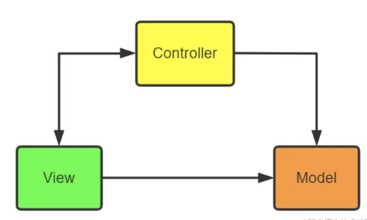
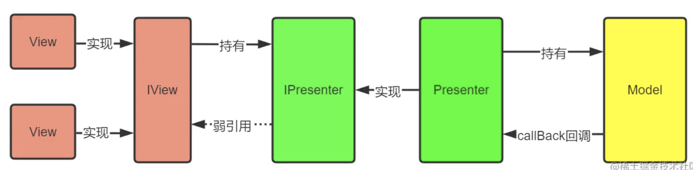
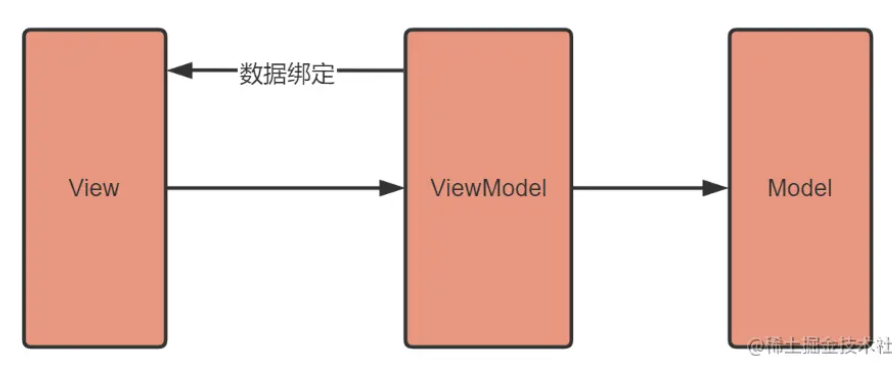

1. MVC、MVP、MVVM
1.1.1. 总结
- MVC：Model-View-Controller，经典模式，很容易理解，主要缺点有两个：
- View对Model的依赖，会导致View也包含了业务逻辑；
- Controller会变得很厚很复杂。
- MVP：Model-View-Presenter，MVC的一个演变模式，将Controller换成了Presenter，主要为了解决上述第一个缺点，将View和Model解耦，不过第二个缺点依然没有解决。
- MVVM：Model-View-ViewModel，是对MVP的一个优化模式，采用了双向绑定：View的变动，自动反映在ViewModel，反之亦然。
2. MVC

2.1. MVC在Android中的实现
- View：xml+Activity
- Model对应于本地数据文件或网络获取的数据体，对数据的处理也会在这一层进行。
- Controller一种是直接把Activity当成Controller；一种是独立出Controller类，进行逻辑分离。
2.2. 处理流程
- view接收用户的点击
- view请求controller进行处理或直接去model获取数据
- controller请求model获取数据，进行其他的业务操作
- 这一步可以有多种做法：
- 利用callBack从controller进行回调
- 把view实例给controller，让controller进行处理
- 通知view去model获取数据
3. MVP
MVC的一个演化版本，全称Model-View-Presenter。
MVP能够有效降低View的复杂性，避免业务逻辑被塞进View中。同时会解除View和Model的耦合性，同时带来良好的可扩展性、可测试性。

3.1. 角色
把Activity中的UI逻辑抽象成View接口，把业务逻辑抽象成Presenter接口，Model类还是原来的Model类
Presenter交互中间人
主要作为沟通View和Model的桥梁，它从Model层检索数据后，返回给View层，使得View和Model之间没有耦合，也将业务逻辑从View角色上抽离出来。
View用户界面
View通常是Activity或Fragment或者某个View控件，它含有一个Presenter成员变量。通常View需要实现一个逻辑接口，将View上的操作转交给Presenter实现，最后Presenter调用View逻辑接口将结果返回给View元素。
Model数据的存取
对于一个结构化的APP来说，Model角色主要是提供数据的存取功能。
3.2. 优点
- MVP通过模块职责分工，抽离业务逻辑，降低代码的耦合性
- 实现模块间的单向依赖，代码思路清晰，提高可维护性
- 模块间通过接口进行通信，降低了模块间的耦合度，可以实现不同模块独立开发或动态更换
3.3. 缺点
MVP的最大特点就是接口通信，接口的作用是为了实现模块间的独立开发，模块代码复用以及模块的动态更换。但是我们会发现后两个特性，在Android开发中使用的机会非常少。presenter的作用就是接受view的请求，然后再model中获取数据后调用view的方法进行展示，但是每个界面都是不同的，很少可以共用模块的情景出现。这就导致了每个Activity/Fragment都必须写一个IView接口，然后还需要再写个IPresenter接口，从而产生了非常多的接口，需要编写大量的代码来进行解耦。
4. MVVM

viewModel通过将数据和view进行绑定，修改数据会直接反映到view上，通过数据驱动型思想，彻底把MVP中的Presenter的UI操作逻辑给去掉了。
总的来说是View和逻辑解耦，并且逻辑可以复用于多个View。
与MVC、MVVM的区别
MVC的特点：
- 用户可以向View发送指令，再由View直接要求Model改变状态。
- 用户也可以直接向Controller发送指令，再由Controller发送给View。
- Controller起到事件路由的作用，同时业务逻辑都部署在Controller。

由此可以看出，MVP与MVC的区别在于，View不能直接访问Model，需要通过Presenter发出请求。
MVVM的特点：

MVVM：Model-View-ViewModel
MVVM与MVP非常相似，唯一的区别是View和Model进行双向绑定，两者之间有一方发送变化则会反应到另一方。MVP和MVVM的主要区别则是：MVP中的View更新需要通过Presenter，而MVVM则不需要，因为View和Model进行了双向绑定，数据的修改会直接反应到View角色上，而View的修改也会导致数据的变更。